10x与 Visium HD联合分析：颗粒酶K⁺ CD8⁺ T细胞与成纤维细胞相互作用促进中性粒细胞性炎症
原文：https://mp.weixin.qq.com/s?__biz=MzAwMzIzOTk5OQ==&mid=2247535574&idx=1&sn=105f693184b3106f62b2afe0e8ea9962&chksm=9b3c3286ac4bbb9001867e66c34c995e47535acdbb8825758810c8ffda978a703aa439dd3a1b#rd 合集：文献速递
** **
一、写在前面
本次汇报的是发布于《Nature Communications》（IF=15.7）的文章：《Granzyme K+CD8+ T cells interact with fibroblasts to promote neutrophilic inflammation in nasal polyps》。中文名称：颗粒酶 KCD8 T 细胞与成纤维细胞相互作用，促进鼻息肉中的性粒细胞炎症 。
文章链接：https://pubmed.ncbi.nlm.nih.gov/39614076/
在过去十年中，对于 CRSwNP 发病机制的阐明取得了相当进展，促进了针对CRSwNP中2型炎症的生物制剂的开发。大约有 40–60%的患者对外科手术或糖皮质激素及抗2型炎症治疗反应不佳，值得注意的是，CRSwNP对医疗干预的耐受性常常与中性粒细胞性炎症相关，但CRSwNP中中性粒细胞性炎症的发展及其调控机制尚不明确。最近的研究已证明基质细胞—免疫细胞相互作用在促进过敏和自身免疫疾病炎症以及驱动肿瘤发生中起关键作用。CD8+T细胞被鉴定为鼻息肉中主要的淋巴细胞亚群 ，但浸润的 CD8+T细胞在调节组织炎症中的功能仍然在很大程度上未知。
因此，如何对鼻息肉中异质CD8+T细胞亚群及其克隆特征进行全面表征，以及CD8+T细胞与非免疫组织环境之间如何进行相互作用仍需探索。
如果你希望有人真的手把手教你学单细胞和空转： 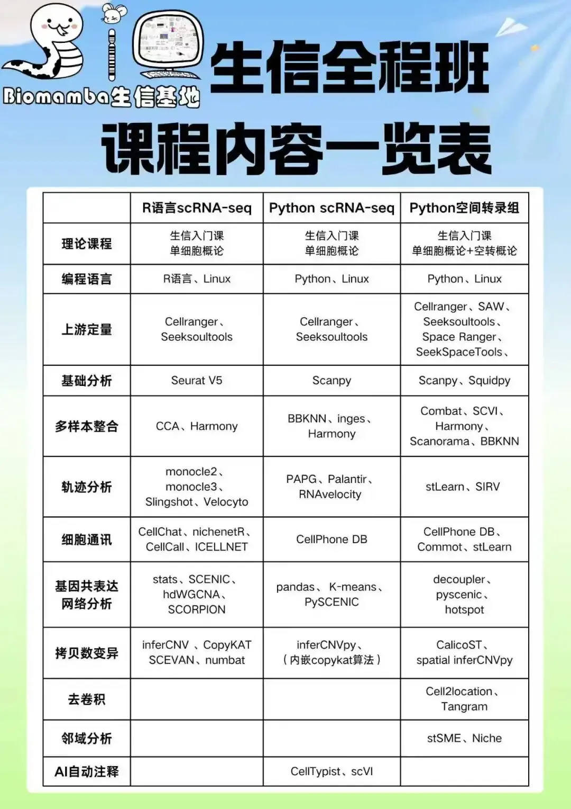
Python版scRNA-seq分析全流程Python 空间转录组全程班 如果需要数据分析指导 、生信热点全文复现 、自测数据个性化分析 辅导、常态化实验学习，欢迎联系客服微信[Biomamba_zhushou]。
二、主要内容
1: 对照组参与者与 CRSwNP 患者之间的不同免疫细胞组成
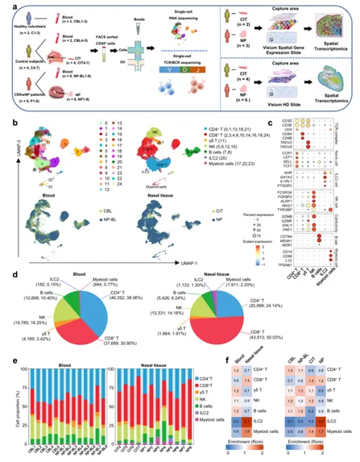
Figure1
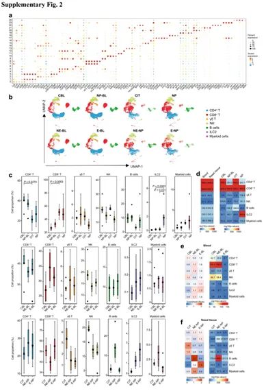
FigureS2
根据经典细胞谱系特异性基因的表达【1c】，这些簇被分配为八种主要免疫细胞类型，其中CD8+ T 是在鼻组织中数量最多的亚群【1d】。应用 Ro/e 评分评估每种细胞类型的组织偏好性。CD8 + T、ILC2 和髓系细胞在鼻组织中富集【1e、f 及补充图 2c、d】。γδT 和 NK 细胞在 CITs 中富集，而 ILC2s 在 NPs 中富集。根据嗜酸性粒细胞浸润程度，CRSwNP 患者被分为嗜酸性（E）组和非嗜酸性（NE）组【补充图 2c、e、f】。 ILC2 优先在 E-NP 中富集，B 细胞则在 NE-NP 中富集。患者外周血的免疫细胞组成与对照参与者相似，提示 CRSwNP 患者的免疫反应更可能是局部性的而非系统性的【图 1e、f 及补充图 2c–e】。
2:在鼻息肉中，与对照组织相比，具有独特转录程式的 GZMK+CD8+ T 细胞数量增加
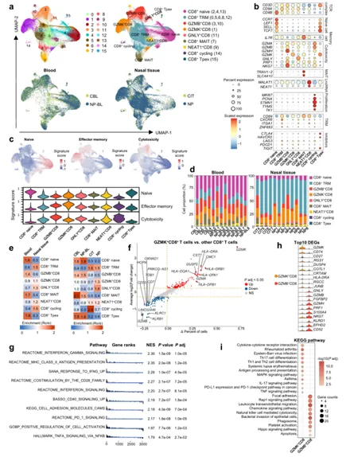
Figure2
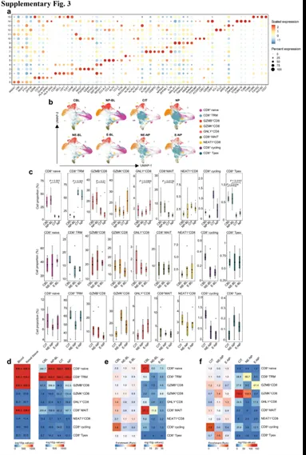
FigureS3
本研究将 CD8⁺T 细胞分为16簇、9种转录状态【2a、b、c 及补充图 3a】：naive（簇2/4/13，CCR7/SELL/LEF1/TCF高、抑制分子低），TRM（簇0/5/6/8/12，CD69/CXCR6/ITGA1高且细胞毒性低），GZMB⁺（簇3/10，GNLY/GZMB/GZMH/PRF1/NKG7高），GZMK⁺（簇1，GZMK与效应记忆特征高、其他颗粒酶低），GNLY⁺（簇11），MAIT（簇7，TRAV1-2/SLC4A10高），NEAT1⁺（簇9，MALAT1/NEAT1高），Cycling（簇14，MKI67/PCNA/TYMS高），Tpex（簇15，CCR7/TCF7及CTLA4/HAVCR2/TIGIT高）。TRM、GZMK⁺、GNLY⁺、NEAT1⁺与Cycling在鼻组织富集，GZMK⁺在鼻息肉增多；GZMB⁺多见外周血，组间总体亚型构成差异不显著【2a、d、e 及补充图 3b-f】。功能上，GZMK⁺相较其他CD8⁺上调 GZMK 与 MHC-II，GSEA 富集 IFN-γ 信号与 MHC-II 抗原呈递；在鼻息肉中伴 CD74/CD27 升高并富集细胞因子-受体互作、MAPK 与 EBV 相关基因；而 GZMB⁺则上调 NK 介导细胞毒通路标志物【2f-i】。
3:GZMK+CD8+ T 细胞是鼻息肉中GZMK的主要细胞来源
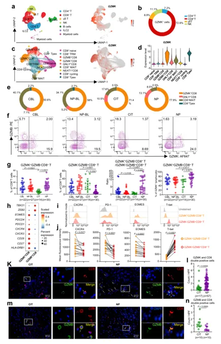
Figure3
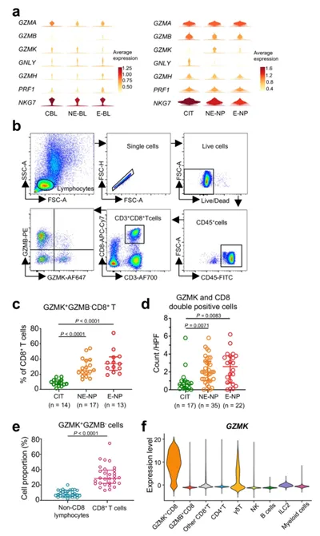
FigureS4
为确定 GZMK 的来源，本文在 CD45⁺淋巴细胞中评估其表达：CD8⁺T 占 72.8%，且在 CD8⁺群内主要由 GZMK⁺ CD8⁺T 承担，其 GZMK 水平高于 GNLY⁺ CD8、MAIT、Tpex 等【3a-d】。于鼻息肉（NPs），GZMK⁺ CD8⁺T 占 GZMK⁺细胞的 77.9%，为主要来源【3e】；相比对照下鼻甲（CITs），NPs 中 CD8⁺T 整体 GZMK 上升而细胞毒标志下降，表现为 GZMK⁺GZMB⁻ 增、GZMK⁻GZMB⁺ 减【3f，g 及补充图 4a, b】。表型上，GZMK⁺ CD8⁺T 较 GZMB⁺ CD8⁺T 上调 趋化因子受体CXCR3/4、程序性细胞死亡相关标志PDCD1/PDCD4、转录因子EOMES，下调 ZEB2、TBX21【3h-j】；流式与免疫荧光证实两者位于固有层，NPs 中前者富集、后者缺乏【3k–n】。NE-NPs 与 E-NPs 间该亚群丰度无显著差异【补充图 4c、d】；非 CD8 淋巴细胞对 GZMK 的贡献较小，scRNA-seq 一致支持【补充图 4f】。
4: NPs 中GZMK+CD8+ T 细胞与成纤维细胞的相互作用
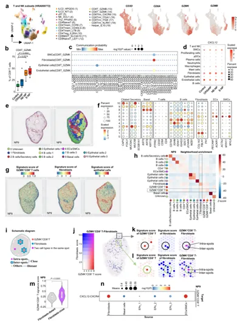
Figure4
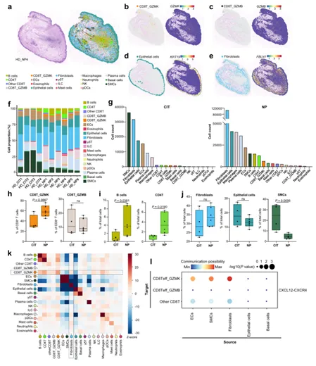
Figure5
综合公开 scRNA-seq（HRA000772）与本队列 Visium/Visium HD，发现 CD8T_GZMK 在 E-NP、NE-NP 中均富集，其转录谱与 GZMK⁺CD8⁺T 一致（GZMK、CD27、CD28、MHC-II↑，细胞毒基因低）。受体-配体与空间映射显示该亚群主要位于固有层，经 CXCR4–CXCL12 与成纤维细胞/内皮细胞互作，其中 CXCL12 主要来自成纤维细胞；而 CD8T_GZMB 的该轴互作较弱。Visium 的富集打分与“内/外点”以及 HD 的邻域分析一致揭示 GZMK⁺CD8⁺T–成纤维细胞选择性共定位（对上皮不显著），且靠近成纤维细胞处的 GZMK⁺信号更强。Visium HD 还显示鼻息肉免疫浸润增强，CD8T_GZMK、B、CD4⁺T 比例较对照升高，而成纤维/上皮比例无明显变化、平滑肌下降。整体表明鼻息肉内存在以 CXCR4–CXCL12 为核心的 GZMK⁺CD8⁺T–成纤维细胞微环境。
5:GZMK + CD8 + T 细胞促进成纤维细胞的促炎表型并与息肉中的嗜中性粒细胞炎症相关
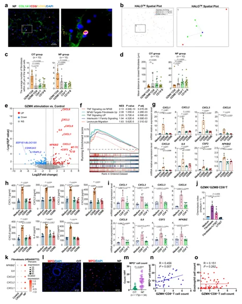
Figure6
多色IF证实鼻息肉（NP）中 GZMK⁺CD8⁺T 与成纤维细胞（COL1A1⁺）紧邻；HALO 定量显示其 25 μm 内成纤维细胞数最多、最近邻距离最短，优于 GZMB⁺CD8⁺T、CD4⁺T、CD19⁺B。重组 GZMK 特异上调 NP 成纤维细胞的炎症/趋化程序（TNF、IL-1、白细胞迁移），诱导 CXCL1/2/3/6/8、IL6、CSF2、NFKBIZ 的 mRNA 与蛋白；GZMA/GZMB 无此效应；CXCL12 基线高但不被进一步上调。功能上，NP 成纤维细胞促进 GZMK⁺CD8⁺T 迁移，且被 LIT927（CXCL12 中和）抑制；GZMB⁺CD8⁺T 迁移不变。外部与本队列数据一致显示 NP 成纤维细胞 IL6、CXCL1/2/8 升高，MPO⁺ 中性粒细胞显著增多，并与 GZMK⁺CD8⁺T 数量正相关（与嗜酸性无相关）。
6:CD8 + T 细胞的克隆关系与发育轨迹
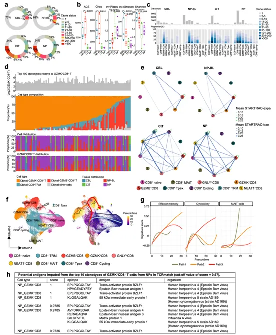
Figure7
scTCR-seq 显示约 70% CD8⁺T 获得 TCR 克隆型；与外周血相比，鼻组织（CIT/NP）克隆扩增更显著、克隆多样性下降。在各亚型中，TRM、GZMB⁺ 与 GZMK⁺ CD8⁺T均呈高克隆扩增，且 GZMK⁺ 于 NP 趋向更强。对 GZMK⁺ 相关前100个克隆型分析表明，约 20% 仅见于 GZMK⁺，其余与 TRM、GZMB⁺ 共享，提示克隆转换；并在 NP 与血液间显著重叠，暗示 GZMK + CD8 + T 细胞在血液与组织之间迁移。STARTRAC 强化了 GZMK⁺ 与 TRM、GZMB⁺ 的关联；Monocle 轨迹自 naive→TRM 分出三路：至 MAIT、至 GZMK⁺、以及至 GZMB⁺→GNLY⁺，显示GZMK + CD8 + T 细胞和 GZMB + CD8 + T 细胞的分化发育途径存在分歧。TCRmatch 指示 TRM 与 GZMB⁺ 常匹配 SARS-CoV-2 表位，而 NP 中 GZMK⁺ 富配 EBV 表位（CIT 中 GZMK⁺无匹配）。
7:GZMK + CD8 + T 细胞的扩增以及在慢性炎症中通过 CXCR4-CXCL12 轴与成纤维细胞的相互作用
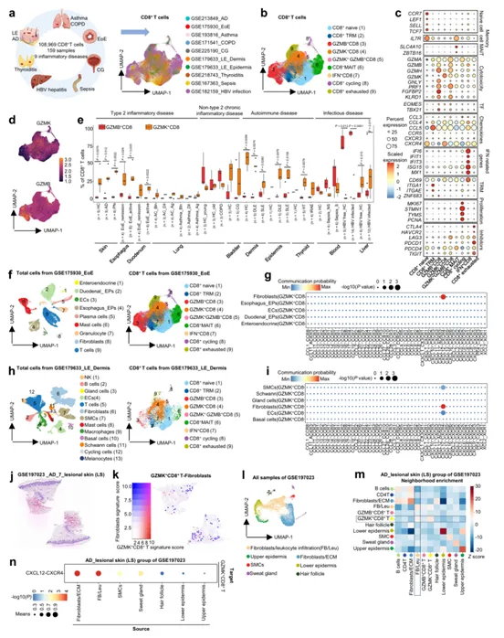
Figure8
本文整合多病种 scRNA-seq（共计108,969个CD8⁺T）发现：在多种炎症/感染状态中GZMK 与 GZMB 表达互不重叠，GZMK⁺GZMB⁺细胞仅占 CD8 + T 细胞的一小部分，且GZMK⁺CD8⁺T 在多种慢性炎症组织（如特应性皮炎、嗜酸性食管炎、桥本甲状腺炎、HBV肝炎及红斑狼疮）中相较于GZMB⁺更为丰富。进一步在含结构细胞的数据集中（如嗜酸性食管炎、红斑狼疮真皮及特应性皮炎的空间转录组/解卷析）显示，GZMK⁺CD8⁺T 与成纤维细胞呈空间邻近并通过 CXCR4–CXCL12 轴发生相互作用，提示这种以GZMK为主的非典型“细胞毒性”谱系及其与成纤维细胞的联系，可能是多种慢性炎症中的普遍现象。
三、总结与展望
1、总结
本研究整合 scRNA-seq、scTCR-seq、空间转录组（Visium/Visium HD）与多色免疫组化/功能实验，证明在慢性鼻窦炎伴鼻息肉（CRSwNP）中存在一个以 GZMK⁺ CD8⁺T 为特征的非典型“细胞毒性”亚群：该亚群在鼻息肉中富集、呈克隆扩增、主要位于固有层并与成纤维细胞选择性共定位。成纤维细胞通过 CXCL12–CXCR4 轴募集 GZMK⁺ CD8⁺T，反过来 GZMK（外泌形式）激活成纤维细胞诱导一系列促中性粒细胞的趋化因子/细胞因子（如 CXCL1/2/3/6/8、IL6、CSF2），从而促进局部嗜中性炎症。
2、创新与意义
鉴定并功能学验证了 GZMK⁺ CD8⁺T 作为驱动鼻息肉嗜中性炎症的关键淋巴细胞亚群（区别于经典 GZMB⁺ 细胞毒性亚群）。
揭示了成纤维细胞—GZMK⁺CD8⁺T 的双向、位点特异性互作机制，为理解组织微环境中免疫—基质协同致炎提供新视角。
通过多模态组学与体外/体内相关性分析，建立了从克隆谱、转录表型到空间定位与功能效应的一体化证据链。
- 机制突破
揭示 CXCL12（成纤维细胞）→ CXCR4（GZMK⁺CD8⁺T） 为主要招募轴；GZMK（外泌）可直接诱导成纤维细胞表达促中性粒细胞趋化因子与炎性因子（通过PAR-1/ERK等可能路径），形成正反馈的嗜中性炎症回路。
免疫谱系与轨迹分析显示 GZMK⁺ 与 GZMB⁺ CD8⁺T 在分化轨迹与转录调控（EOMES↑ vs T-bet↑）上分歧，且与不同病源性表位（EBV vs SARS-CoV-2）关联，提示抗原与微环境共同驱动分化命运。
- 转化价值
GZMK⁺ CD8⁺T 与成纤维细胞互作轴（CXCR4–CXCL12 / GZMK）可作为阻断局部嗜中性炎症的新治疗靶点（如 CXCL12 中和、小分子抑制 CXCR4、GZMK 抑制或阻断其受体途径）。
GZMK 或其相关转录特征可用作病理亚型标志或预后/治疗反应分层生物标志物，指导个体化治疗策略（尤其针对难治性、嗜中性占优的 CRSwNP）。
- 跨疾病关联
在多种慢性炎症（特应性皮炎、嗜酸性食管炎、桥本甲状腺炎、HBV 感染相关肝炎、系统性红斑狼疮等）中复现了 GZMK⁺ CD8⁺T 的富集与与成纤维细胞的 CXCR4–CXCL12 互作，提示该致病机制可能为多种组织炎症的普遍模式，具有广泛病种的研究与治疗潜力。
3、局限与未来方向
标志物与分离：缺乏特异性细胞表面标志限制对 GZMK⁺ CD8⁺T 的纯化与体内功能验证，需鉴定可用于分离的表面分子。
机制深挖：GZMK 的确切受体/下游信号（例如 PAR-1 依赖性机制）及其它可能的效应分子需进一步阐明；体内功能缺失模型（细胞特异性敲除/抑制）是必要的因果验证。
临床验证：需更大样本量、多中心队列验证 GZMK 标志与嗜中性炎症/临床表型的相关性及其作为预测/疗效生物标志物的价值。
技术局限：10x droplet scRNA-seq 对脆弱细胞（如粒细胞）捕获不足，建议采用补充平台（微阱、空间单细胞技术）以完善微环境网络图谱。
4、结论
本研究首次系统表征了GZMK⁺CD8⁺T 在CRSwNP的定位、克隆学与功能作用，提出成纤维细胞—GZMK⁺CD8⁺T—中性粒细胞轴为鼻息肉嗜中性炎症的核心机制，为靶向该轴的诊疗策略开发提供了明确的分子与细胞学依据。

如何联系我们

 留一个领取资料、开箱即用的单细胞分析镜像的微信号[Biomamba_zhushou]，方便各位随时交流。同时我们也构建了交流群矩阵，欢迎大家入群讨论。
大家可以阅读完这几篇之后添加给生信入门初学者的小贴士
没有检索，就没有发言权
留一个领取资料、开箱即用的单细胞分析镜像的微信号[Biomamba_zhushou]，方便各位随时交流。同时我们也构建了交流群矩阵，欢迎大家入群讨论。
大家可以阅读完这几篇之后添加给生信入门初学者的小贴士
没有检索，就没有发言权
已有生信基地联系方式的同学无需重复添加

 您点的每个赞和在看，我都认真当成了喜欢
您点的每个赞和在看，我都认真当成了喜欢